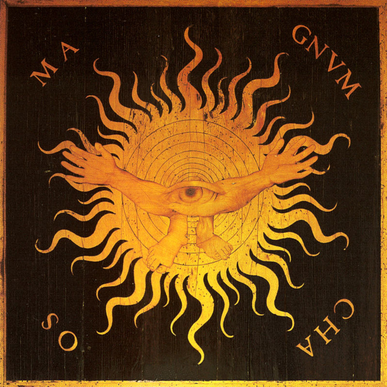

Cosmogonia
O que são as mitologias? Como os povos antigos explicavam fenômenos naturais? Ou como eles esclareciam a origem do mundo ou porque de existir os sentimentos, os conflitos e por que existimos? Tudo isso mais outras questões serão discorridas de forma sucinta aqui.
Arte e Cultura

Como as narrativas cosmogonicas afetavam a arte e cultura da época? Elas foram importantes para momentos históricos? Como isso afeta a atualidade e qual a sua importância para a nossa compreensão de mundo? um pequeno resumo sobre essas questões.
Cosmologia

A cosmologia é o campo de estudo que busca explicar o inexplicável, ou seja, o universo, a sua forma de organizar e a sua origem. Mas como ela surgiu e aonde surgiu? Qual a sua importância? Essas e muitas outras perguntas irão ser respondidas aqui neste artigo.